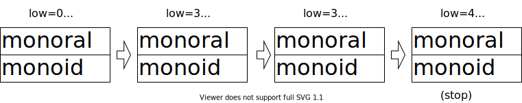

ローリングハッシュ (Rabin-Karp)¶
あるルールに従って生成された文字列のハッシュ値を比較することで、文字列検索を高速に行う手法。
概要¶
長さ \(n\) の文字列 \(S_n\) に対応する数列 \(C=c_1, c_2, \ldots , c_{n}\) を考える。 この数列 \(C\) を入力とするハッシュ関数を次のように定義する。
2つの文字列が一致するとみなす条件は、元の文字列の長さが同じで、かつハッシュが一致することである。
性質¶
文字列 \(S\) の接頭辞 \(S_{1, r}\) に対応する数列 \(C_{1, r} = c_1, c_2, \ldots , c_{r}\) に関して、次の漸化式が成り立つ。
これにより、任意の部分文字列が接頭辞のハッシュで表現できる。
実装¶
次の3つの機能を実装する。簡易化のため、区間は半開区間として定義する。
get(l, r): 部分文字列 \(S_{[l, r)}\) のハッシュ \(S_{[l, r)}\) を求める。計算量は \(\mathcal{O}(1)\)。concat(h1, h2, l2): 文字列 \(S_1, S_2\) の連結に対応するハッシュ \(H(S_1 + S_2)\) を求める。計算量は \(\mathcal{O}(1)\)。lcp(l1, r1, l2, r2): \(S_{[l1, r1)}\) と \(S_{[l2, r2)}\) の最大共通接頭辞 (LCP) の長さを求める。計算量は \(m=\min (|S_{[l1, r1)}|, |S_{[l2, r2)}|)\) として \(\mathcal{O}(\log m)\)。
lcpの実装では二分探索を利用しており、次の図のような流れでLCPの長さが求まる。
[1]:
class RollingHash():
def __init__(self, S, b=3491, m=999999937):
"""任意の基数と法でハッシュを生成する"""
n = len(S)
self.prefix = prefix = [0] * (n+1)
self.power = power = [1] * (n+1)
self.b = b
self.m = m
for i in range(n):
c = ord(S[i])
prefix[i+1] = (prefix[i] * b + c) % m
power[i+1] = (power[i] * b) % m
def get(self, l, r):
"""S[l, r) のハッシュを求める"""
return (self.prefix[r] - self.power[r-l] * self.prefix[l]) % self.m
def concat(self, h1, h2, l2):
"""S1+S2 のハッシュを、それぞれのハッシュから求める"""
return (self.power[l2] * h1 + h2) % self.m
def lcp(self, l1, r1, l2, r2):
"""S[l1, r1) とS[l2, r2) の最大共通接頭辞を求める"""
# LCPの最小値 (範囲内)
low = 0
# LCPの最大値 + 1 (範囲外)
high = min(r1-l1, r2-l2) + 1
while high - low > 1:
mid = (high + low) // 2
if self.get(l1, l1 + mid) == self.get(l2, l2 + mid):
low = mid
else:
high = mid
return low
https://www.slideshare.net/nagisaeto/rolling-hash-149990902
[2]:
import random
lcp = 10**9
for m in [999999937, 10**9+7]:
b = random.randint(2, m-1)
rh = RollingHash("monoraimonoid", m=m, b=b)
lcp = min(lcp, rh.lcp(0, 7, 7, 13))
print(lcp)
4
dictを利用できる。キーにはハッシュ値を指定する。dictの処理が最適化されており、それを利用した実装も可能。[3]:
from pprint import pprint
from collections import defaultdict
S = "mississippi"
N = len(S)
# 長さ3の文字列を検索
size = 3
rh = RollingHash(S, m=2019, b=10**9+7)
d = defaultdict(list)
for i in range(N-size+1):
h = rh.get(i, i+size)
d[h].append(i)
pprint(d)
defaultdict(<class 'list'>,
{501: [8],
840: [7],
1068: [1, 4],
1379: [6],
1382: [3],
1449: [2, 5],
1955: [0]})